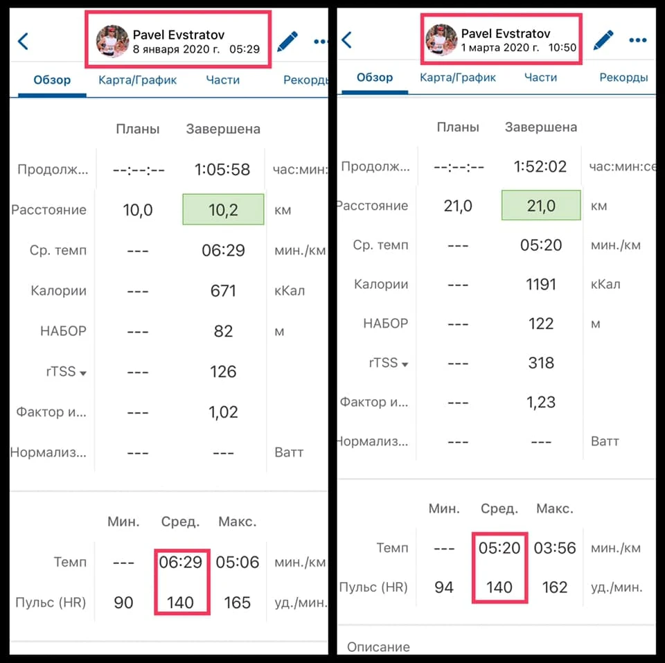
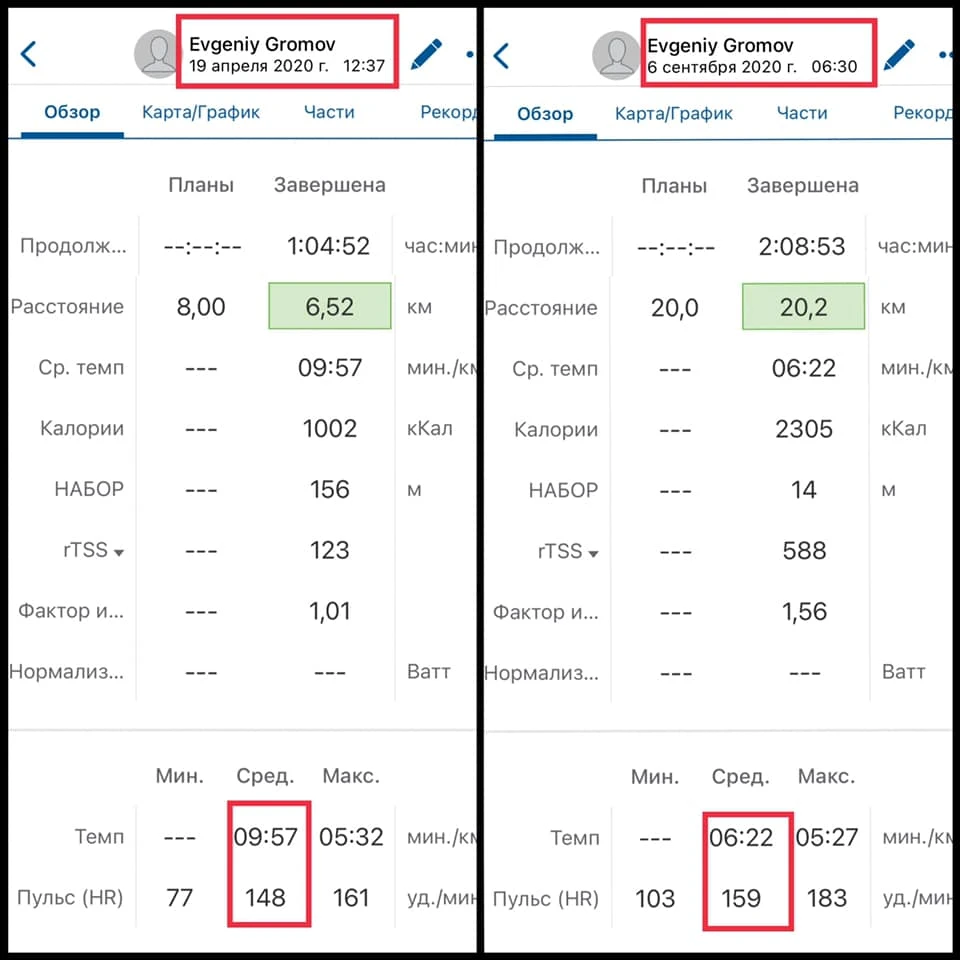
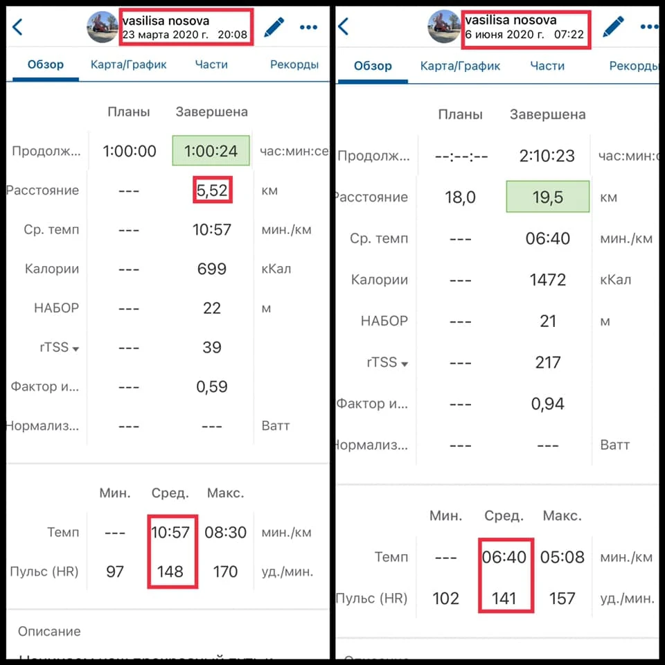
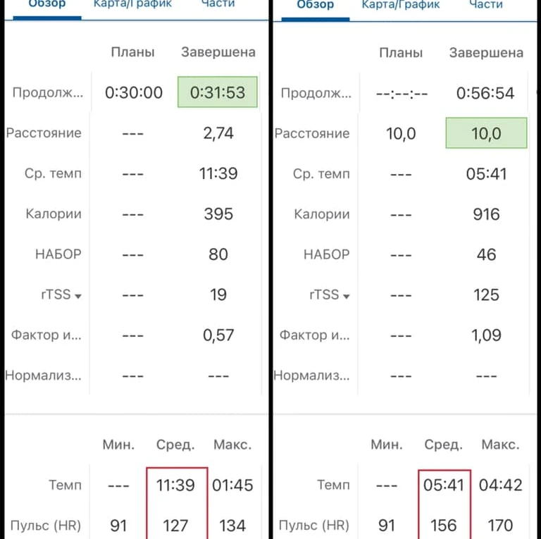
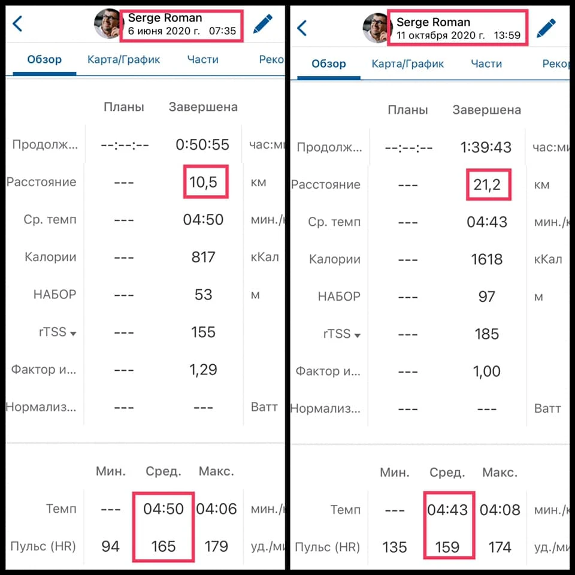

Сьогодні покажу кілька кейсів "до і після" з моєї практики. Це завжди найнаочніша відповідь на питання, за що ви платите.
Коли ставиш амбітні цілі, підхід до тренувань має бути відповідним. Від внутрішнього рішення й дисципліни до грамотного тайм-менеджменту.
У фотогалереї - приклади того, як усього за 2.5-4 місяці змінюється тіло та форма.





І найголовніше: ці результати продовжують зростати.
P.S. Спорт - це не про кілометри. Це про індивідуалізацію. Шаблони працюють до певного рівня, далі вирішує тонке налаштування тренера.